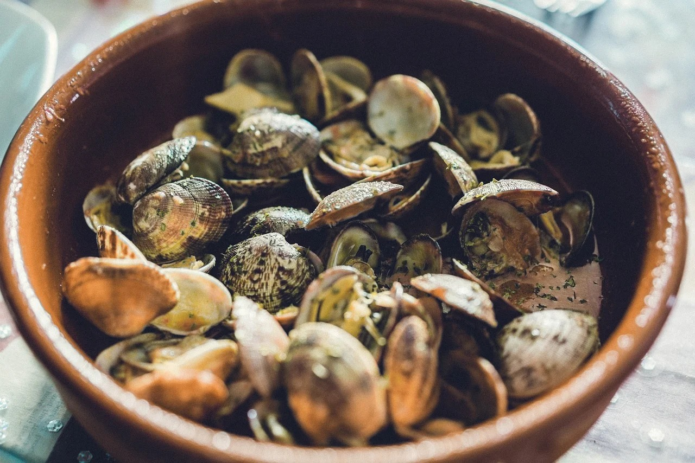
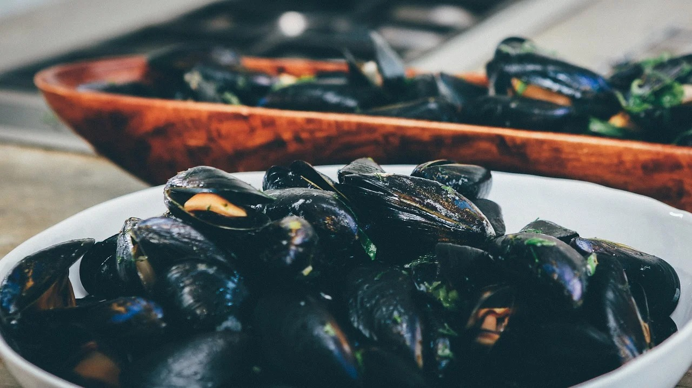
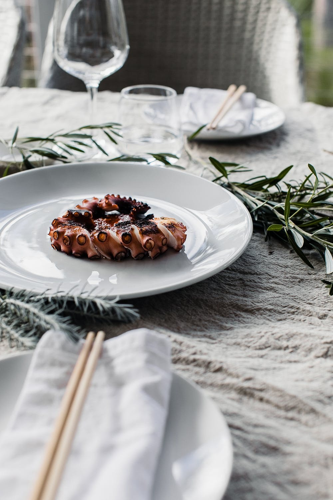

Todos nuestros entrantes
Nuestra carta de entrantes está basada en Almejas a la marinera, Mejillones al vapor y Pulpo. Todos estos productos son frescos y los cocinamos con paciencia y entusiasmo para obtener todo su sabor y textura.
Almejas a la marinera
Nuestras almejas de carril cocinadas con todo el cariño para satisfacer a todos los públicos.
Mejillones al vapor
Los mejores mejillones de la ría cocinados al vapor para un toque sabroso e increíble.
Pulpo
El pulpo es una de nuestras especialidades, lo cocinamos de diversas formas pero siempre conservando todo su sabor.
